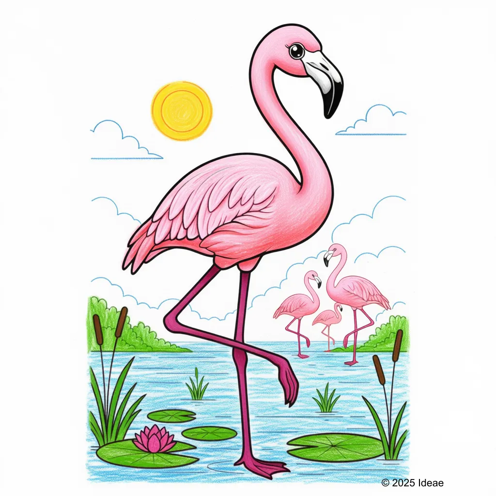

Flamingo
Phoenicopterus spp

Key Characteristics
- Flamingos are famous for their bright pink feathers, which come from the tiny shrimp and algae they eat!
- They stand on one long, skinny leg to save body heat and let the other leg rest in the water.
- Flamingos live in enormous groups called 'colonies' and build their nests out of mud.
Peculiar Facts (Fun Facts!)
- Baby flamingos are born gray or white; it takes a few years for them to turn pink.
- They eat by holding their head upside down in the water, using their specialized beak like a filter to scoop up tiny food.
- Flamingos can fly very long distances, sometimes traveling between lakes in one night.